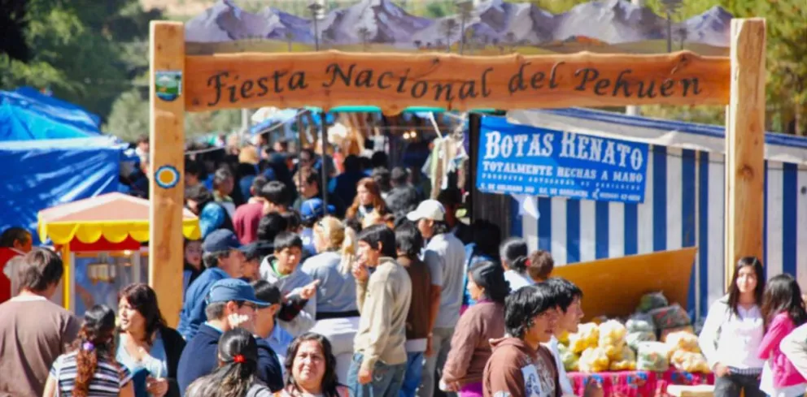

Neuquén no solo es famoso por sus paisajes, también tiene una cultura muy rica y diversa. Allí conviven tradiciones antiguas con costumbres modernas, creando una mezcla única que representa a la Patagonia.
Un aspecto muy importante de su cultura es la presencia de los pueblos originarios, como los mapuches. Ellos conservan sus historias, su lengua y sus celebraciones. Sus tejidos, artesanías y danzas son parte fundamental de la identidad neuquina.
Algunos monumentos históricos y culturales de Neuquen son los siguientes:
La Fiesta Nacional del Pehuén, que se celebra en Aluminé, en marzo y es una celebración importante de la cultura y la tradición mapuche. El pehuén, o pino araucaria, es un árbol fundamental para los pehuenches y el nombre de la zona, Pehuén Mapu.Durante la fiesta, se pueden adquirir tejidos artesanales y otros productos locales en la Casa de la Cultura, el Paseo de los Artesanos y otros comercios. Aunque tambien existen otras celebraciones, tales como; Fiesta Nacional del Puestero (Junín de los Andes, febrero). Fiesta Nacional de la Confluencia (Neuquén Capital, febrero). Fiesta Nacional del Montañés (San Martín de los Andes, agosto). Fiesta de la Nieve (Caviahue-Copahue)
Por ultimo, algunos platos tipicos son Chivito al asador, Trucha patagónica, Cordero patagónico, Piñones del pehuén (semilla de la araucaria), Empanadas y tortas fritas en fiestas populares.